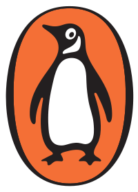
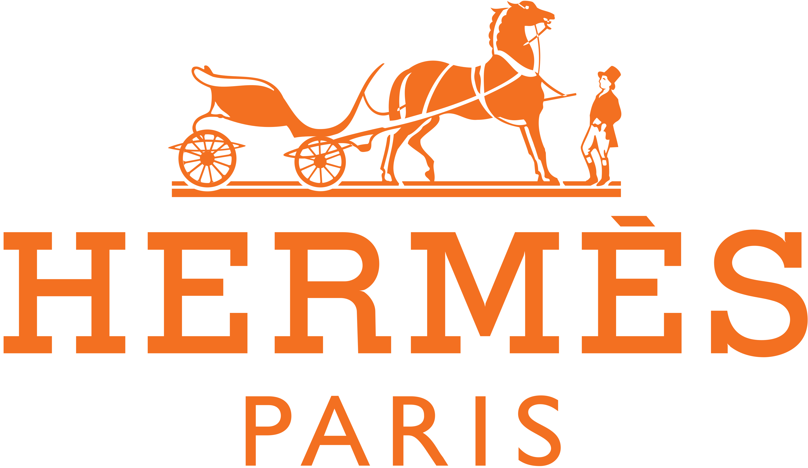
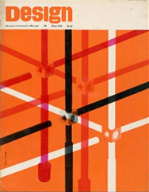
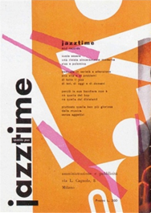
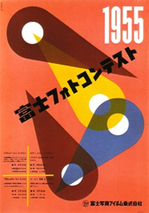

Il colore dell'energia visiva e della comunicazione spontanea
L'arancione è un colore caldo, luminoso e immediato. Infatti, è spesso percepito come un colore "attivo", che stimola lo sguardo e interrompe la monotonia visiva.
L'arancione è associato al divertimento, alla socialità e a una dimensione comunicativa spontanea. Evoca calore, entusiasmo e creatività, ma anche leggerezza e informalità.
Nel linguaggio visivo può suggerire originalità e un approccio meno istituzionale, più diretto e accessibile.
Esso viene impiegato come colore di forte richiamo visivo, utile per mettere in evidenza elementi e guidare l'attenzione.
È frequente nella comunicazione promozionale, nei brand legati all'intrattenimento televisivo e musicale, nei servizi digitali e logistici.
255, 165, 0
0%, 35%, 100%, 0%
74, 23, 78
39°, 100%, 100%
Marchio Penguin Books, 2003

Marchio Hermès, dall'illustrazione di Alfred de Dreux, 1950-1954

Marchio Amazon, 1995
Copertina rivista "Design", 1962

Retro copertina del n. 4 della rivista "Jazz Time", 1951

Manifesto per un concorso fotografico, 1955
